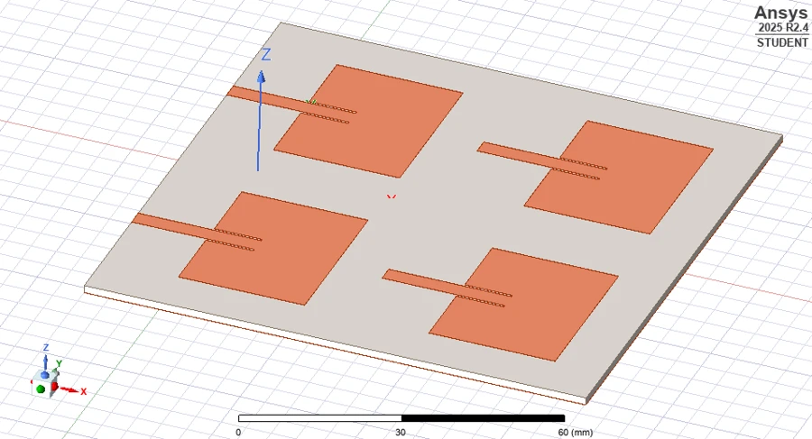
Project Sections
- 1. Introduction and Objectives
- 2. Reference Antenna Element
- 3. Array Theory and Design Parameters
- 4. Broadside Array Baseline
- 5. Element Spacing and Mutual Coupling
- 6. Progressive Phase and Beam Steering
- 7. Grating Lobes and Scan-Angle Limits
- 8. Active Input Matching During Beam Steering
- 9. Extension to a 2×2 Planar Array
- 10. Practical Implementation Considerations and Limitations
- 11. Conclusion
This study builds on the rectangular patch antenna and antenna integration projects. All results below are full-wave simulations; the physical feed network and measurement validation remain future work.
1. Introduction and Objectives
The previous projects developed a rectangular microstrip patch antenna operating at approximately 3 GHz and subsequently examined how its performance changed when realistic features such as a finite ground plane, coaxial feed, mechanical connector, and nearby dielectric structures were introduced. Those studies focused primarily on the behavior of a single radiating element. The present project extends that validated antenna into a small phased array and investigates the additional capabilities and limitations introduced when multiple elements operate together.
1.1 Motivation for an Antenna Array
The radiation pattern of a single patch antenna is primarily determined by its geometry and installation environment. Once fabricated, its main beam generally remains fixed, while its achievable directivity and beamwidth are limited by the antenna’s physical aperture.
An antenna array combines the fields radiated by multiple elements. When the elements are excited coherently, constructive interference reinforces radiation in selected directions, while destructive interference reduces radiation in others. Increasing the effective aperture in this manner can produce a narrower beam and greater directivity than can be obtained from a single element of the same type.
The relative phase applied to each element also provides control over the direction of maximum radiation. By changing these excitation phases, the main beam can be steered electronically without physically rotating the antenna. Larger arrays can additionally use amplitude and phase control to shape the radiation pattern, adjust sidelobe levels, and place nulls in selected directions.
These benefits are accompanied by several practical limitations. Closely spaced elements interact through mutual coupling, causing the current distribution and input impedance of each element to depend on the excitation of the other elements. Beam steering can also reduce realized gain, distort the pattern, and change the active impedance presented at the antenna ports. Conversely, excessive element spacing can produce grating lobes, additional strong radiation beams that limit the array’s usable scanning range.
The behavior of an array therefore represents a compromise between aperture size, mutual coupling, beamwidth, scan range, impedance stability, and grating-lobe suppression.
1.2 Project Objectives
The objective of this project is to develop practical phased-array experience by extending the previously validated 3 GHz rectangular patch into linear and planar arrays.
A two-element linear array was first used as a controlled platform for studying the fundamental relationships between element spacing, excitation phase, mutual coupling, and radiation-pattern formation. Its simulated full-wave behavior was compared with predictions obtained from analytical array-factor theory and pattern multiplication.
The investigation then examined how progressive excitation phase steers the main beam and how element spacing affects coupling, beamwidth, realized gain, and the formation of grating lobes. The multiport S-parameters were also used to evaluate active reflection coefficient and scan-dependent input behavior.
Finally, the linear array was extended into a 2×2 planar configuration to evaluate broadside gain, principal-plane beamwidth, and the additional coupling paths of a planar arrangement. Two-dimensional electronic steering remains a possible extension.
The principal objectives are therefore to:
- Construct and validate a 1×2 array using the existing patch element.
- Compare analytical array predictions with full-wave HFSS results.
- Quantify the effect of element spacing on mutual coupling and radiation performance.
- Apply progressive phase excitation to demonstrate electronic beam steering.
- Identify the onset of grating lobes as spacing and scan angle increase.
- Evaluate scan angle, beamwidth, realized gain, and active input behavior.
- Extend the final linear-array design into a 2×2 planar array.
1.3 Scope and Methodology
The project used the corrected 3 GHz patch antenna from the preceding integration study as its reference element. The 1×2 array served as the primary analytical and parametric model, beginning with a nominal center-to-center spacing of \(0.5\lambda_0\). This spacing provides a conventional starting point that generally offers a useful compromise between mutual coupling and grating-lobe suppression.
Each antenna element was represented by an independent port in HFSS. Equal-amplitude excitations with controlled relative phase were applied directly to these ports, allowing the electromagnetic behavior of the radiating array to be isolated from the design of a physical power-divider or phase-shifter network.
Directivity, gain, and realized gain are normalized to radiated, accepted, and incident power, respectively. Array comparisons therefore use these normalized quantities rather than unnormalized radiated field strength. In the two-port baseline, each port received 1 W of incident power; the gain increase is not simply a consequence of doubling the supplied power.
The study focused on the radiating aperture and its electromagnetic interactions. The detailed design of a corporate feed network, RF phase shifters, control electronics, and calibration system is outside the present scope. These components represent possible extensions once the underlying array behavior has been established.
2. Reference Antenna Element
The array developed in this project is based on the corrected 3 GHz inset-fed rectangular patch antenna established in the preceding antenna-integration study. Reusing a previously validated element provides a known electromagnetic baseline, allowing changes in impedance and radiation behavior to be attributed primarily to array spacing, mutual coupling, and phased excitation rather than to uncertainty in the individual antenna design.
The corrected ideal-feed configuration is used instead of the later connector- and radome-integrated models. This retains the finite PCB geometry and final tuned patch dimensions while excluding the additional asymmetry and detuning introduced by the SMA launch and surrounding mechanical structures. Each array element can therefore be excited through an identical idealized port.
2.1 Reference Geometry
The antenna is implemented on Rogers RO4350B with a relative permittivity of
and a substrate thickness of
A copper thickness of \(0.035\ \mathrm{mm}\) is used for the patch, feed line, and ground plane.
The final patch width and length are:
The patch is excited using a \(3.48\ \mathrm{mm}\)-wide microstrip line designed to provide an approximately \(50\ \Omega\) feed. Impedance matching is achieved using an inset depth of \(9.50\ \mathrm{mm}\), with a \(0.50\ \mathrm{mm}\) gap between the feed line and the adjacent patch conductor.
The reference PCB uses a longitudinal ground-plane margin of \(M_{\mathrm{right}}=10\ \mathrm{mm}\) beyond the radiating edge and a lateral margin of \(M_y=10\ \mathrm{mm}\) on either side of the patch. The finite substrate and ground plane are retained as part of each array element because the preceding study demonstrated that the ground dimensions influence bandwidth, current distribution, and radiation behavior.
| Parameter | Reference value |
|---|---|
| Substrate | Rogers RO4350B |
| Relative permittivity, \(\epsilon_r\) | 3.48 |
| Substrate thickness, \(h\) | 1.52 mm |
| Copper thickness, \(t\) | 0.035 mm |
| Patch width, \(W_p\) | 33.40 mm |
| Patch length, \(L_p\) | 25.21 mm |
| Feed width, \(W_f\) | 3.48 mm |
| Inset depth, \(L_{\mathrm{inset}}\) | 9.50 mm |
| Inset gap, \(g\) | 0.50 mm |
| Longitudinal margin, \(M_{\mathrm{right}}\) | 10 mm |
| Lateral margin, \(M_y\) | 10 mm |
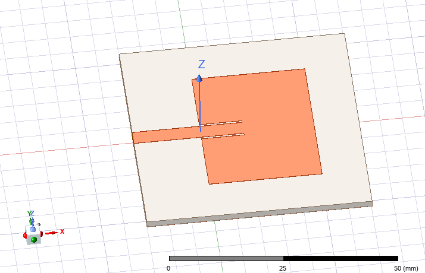
2.2 Reference Input Performance
The patch length was previously reduced from \(25.50\ \mathrm{mm}\) to \(25.21\ \mathrm{mm}\) after a higher-accuracy adaptive solution showed that the original geometry resonated slightly below 3 GHz. The feed width and inset geometry did not require further modification.
The corrected antenna exhibits a minimum reflection coefficient of
at a resonant frequency of
At the nominal operating frequency of 3 GHz, the reflection coefficient remains strongly matched:
The reported −10 dB impedance bandwidth is approximately 56.7 MHz:
The corresponding fractional bandwidth is:
The 5 MHz difference between the resonant and nominal frequencies corresponds to approximately \(0.17\%\) of the operating frequency and is sufficiently small for the antenna to serve as the 3 GHz array element without further retuning.
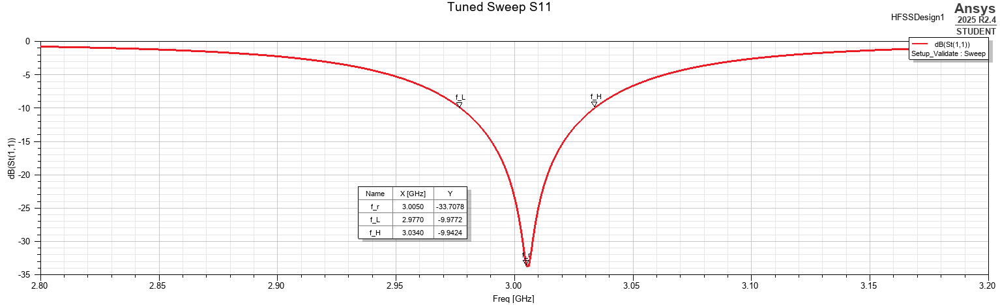
2.3 Reference Radiation Performance
At 3 GHz, the antenna produces the expected broadside radiation pattern of the dominant rectangular-patch mode. The main beam is directed approximately normal to the patch surface along the positive \(z\)-axis.
The simulated peak directivity is
while the peak realized gain is
The corresponding radiation and total efficiencies are:
The small difference between radiation and total efficiency is consistent with the strong impedance match at 3 GHz. The difference between directivity and realized gain primarily represents dielectric, conductor, and residual mismatch losses.
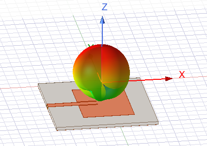
2.4 Reference Performance Summary
The principal characteristics of the isolated array element are summarized below.
| Performance metric | Reference value |
|---|---|
| Resonant frequency | 3.005 GHz |
| Minimum \(S_{11}\) | \(-33.71\ \mathrm{dB}\) |
| \(S_{11}\) at 3 GHz | \(-23.44\ \mathrm{dB}\) |
| \(-10\ \mathrm{dB}\) bandwidth | 56.7 MHz |
| Fractional bandwidth | 1.89% |
| Peak directivity | 7.07 dBi |
| Peak realized gain | 6.29 dBi |
| Radiation efficiency | 83.96% |
| Total efficiency | 83.58% |
| Main-beam direction | Broadside, \(+z\) |
These results define the single-element reference against which the 1×2 and 2×2 arrays are evaluated. Subsequent changes in resonance, input match, realized gain, beamwidth, and radiation direction can therefore be measured relative to an established and validated baseline.
3. Array Theory and Design Parameters
The radiation pattern of an antenna array is determined by both the characteristics of the individual radiating element and the relative positions and excitations of all elements in the array. The validated rectangular patch establishes the element pattern, while the array geometry and port excitations determine how the fields from the individual patches combine in space.
This section establishes the analytical relationships used to predict the array behavior before constructing the corresponding full-wave HFSS model.
3.1 Element Pattern and Array Factor
Under the pattern-multiplication approximation, the total field radiated by an array of identical elements can be expressed as:
where \(E_{\mathrm{element}}\) is the radiation pattern of a single isolated element and \(AF\) is the array factor.
The element pattern describes the angular radiation envelope imposed by the rectangular patch. The array factor describes the interference produced by the relative positions, amplitudes, and phases of the elements. It therefore controls the direction of the main beam, the locations of nulls, the beamwidth, and the appearance of secondary or grating lobes.
Pattern multiplication assumes that every element retains the same radiation pattern it would have in isolation. In a practical array, mutual coupling and the finite shared ground plane alter the current distribution and embedded pattern of each element. The analytical result should therefore be treated as a first-order prediction that is compared with the full-wave HFSS solution.
3.2 Two-Element Linear Array
The first array investigated in this project consists of two identical patches positioned along the \(y\)-axis with a center-to-center separation \(d\). The two ports are excited with equal amplitudes and a relative phase \(\beta\).
For this configuration, the array factor in the \(y\)-\(z\) plane is:
where:
The array factor can also be written as:
where:
Because the exponential term affects phase but not magnitude, the normalized array-factor magnitude is:
For equal-phase excitation, \(\beta=0^\circ\), the contributions from both elements add constructively at broadside:
At the nominal spacing \(d=0.5\lambda_0\), the broadside two-element array factor becomes:
The ideal array-factor half-power points occur at approximately \(\theta=\pm30^\circ\), giving an array-factor HPBW of approximately:
The actual HFSS beamwidth is expected to differ because the total pattern also includes the patch element pattern, finite ground plane, and mutual coupling.
3.3 Directivity and Beamwidth Advantage
A single patch has a fixed physical aperture and correspondingly limited directivity. Combining multiple elements increases the effective aperture of the radiating system and concentrates more of the radiated power into the main beam.
For an ideal array of \(N\) identical, uniformly excited elements, the approximate maximum directivity increase is:
where the directivities are expressed in linear units. In decibels, the ideal improvement is:
The theoretical improvements for the arrays used in this project are therefore:
| Configuration | Number of elements | Ideal directivity increase |
|---|---|---|
| Single patch | 1 | 0 dB |
| 1×2 array | 2 | 3.01 dB |
| 2×2 array | 4 | 6.02 dB |
Using the reference-element directivity of \(7.07\ \mathrm{dBi}\), ideal first-order estimates are:
These values represent ideal estimates rather than guaranteed HFSS results. Finite array size, coupling, element-pattern changes, dielectric and conductor losses, edge effects, and scan-dependent mismatch can reduce the realized improvement.
The 1×2 array is expected to narrow the beam primarily in the \(y\)-\(z\) array plane. Its beamwidth in the orthogonal plane should remain closer to that of the single patch. The 2×2 array should narrow the beam in both principal planes.
3.4 Progressive Phase and Beam Steering
The main beam occurs approximately where the fields from adjacent elements are in phase. For the linear array, this condition is:
The expected scan angle is therefore:
Alternatively, the progressive phase required to steer the beam toward a selected angle is:
For the nominal spacing \(d=0.5\lambda_0\):
and therefore:
The expected scan angles for the planned phase excitations are:
| Progressive phase, \(\beta\) | Predicted beam angle, \(\theta_0\) |
|---|---|
| \(+135^\circ\) | \(-48.6^\circ\) |
| \(+90^\circ\) | \(-30.0^\circ\) |
| \(+45^\circ\) | \(-14.5^\circ\) |
| \(0^\circ\) | \(0^\circ\) |
| \(-45^\circ\) | \(+14.5^\circ\) |
| \(-90^\circ\) | \(+30.0^\circ\) |
| \(-135^\circ\) | \(+48.6^\circ\) |
The HFSS beam angles are compared with these analytical values. Differences can result from mutual coupling, changes in the embedded element patterns, finite-ground effects, and the reduced contribution of the patch element pattern at large scan angles.
3.5 Element Spacing and Grating Lobes
Element spacing influences both the physical aperture and the interaction between adjacent antennas. Small spacing generally produces stronger mutual coupling, while increasing the spacing enlarges the aperture and can narrow the main beam.
However, if the spacing becomes too large, more than one direction can satisfy the constructive-interference condition. The resulting additional maxima are known as grating lobes.
For a uniformly spaced linear array, radiation maxima satisfy:
where \(m\) is an integer. A grating lobe enters visible space when a solution other than the intended main beam satisfies:
A commonly used spacing limit for avoiding grating lobes while steering to \(\theta_0\) is:
The resulting theoretical limits are:
| Intended scan angle | Maximum spacing without a visible grating lobe |
|---|---|
| \(0^\circ\) | \(1.000\lambda_0\) |
| \(15^\circ\) | \(0.794\lambda_0\) |
| \(30^\circ\) | \(0.667\lambda_0\) |
| \(45^\circ\) | \(0.586\lambda_0\) |
| \(60^\circ\) | \(0.536\lambda_0\) |
| \(90^\circ\) | \(0.500\lambda_0\) |
The nominal \(0.5\lambda_0\) spacing therefore provides the largest theoretical scan range without a distinct visible-space grating lobe. Wider spacings may produce a narrower broadside beam but progressively reduce the usable scan range.
3.6 Mutual Coupling
The analytical array factor assumes independent elements, but the electromagnetic field produced by one patch can induce currents on the other patch. This interaction is described as mutual coupling.
For the two-element array, coupling is primarily quantified using:
A lower value of \(\left|S_{21}\right|\) indicates greater isolation between the elements. Coupling is generally expected to become stronger as the elements are moved closer together, although substrate modes, ground-plane currents, and field cancellation can produce more complex behavior than a simple monotonic relationship.
Mutual coupling can affect:
- Resonant frequency.
- Input impedance.
- Impedance bandwidth.
- Surface-current distribution.
- Embedded element pattern.
- Beam direction and symmetry.
- Realized gain and scan performance.
The spacing sweep therefore evaluates both radiation-pattern behavior and multiport S-parameters.
3.7 Active Reflection Coefficient and Active Impedance
The conventional \(S_{11}\) of one array element is calculated while the other port is terminated in the reference impedance. During actual array operation, however, both elements are excited simultaneously. The signal coupled from one element into the other therefore combines with the incident excitation and changes the effective input match.
For equal-amplitude excitation, with Port 2 having a relative phase \(\beta\), the active reflection coefficient at Port 1 is:
Similarly, the active reflection coefficient at Port 2 is:
The corresponding active input impedance is:
where \(Z_0=50\ \Omega\).
These expressions demonstrate that the active match depends not only on the passive port parameters but also on the progressive excitation phase. The antenna may therefore appear well matched when one port is excited independently while exhibiting a poorer match under a particular beam-steering condition.
3.8 Planar 2×2 Array
After the linear-array behavior was characterized, the design was extended into a 2×2 planar array. For an array distributed in both the \(x\)- and \(y\)-directions, the array factor can be expressed as:
where \(d_x\) and \(d_y\) are the spacings along the two array axes, while \(\beta_x\) and \(\beta_y\) are the corresponding progressive phase shifts.
To steer the beam toward \((\theta_0,\phi_0)\), the required phase progressions are:
Applying phase progression along only one axis steers the array-factor maximum in the corresponding principal plane. Applying progression along both axes enables two-dimensional steering in principle; the 2×2 full-wave results reported here use broadside excitation.
The analytical relationships developed in this section define the expected array behavior. The following sections describe the corresponding HFSS models and examine how closely these ideal predictions represent the full-wave behavior of the practical patch array.
4. Broadside Array Baseline
After constructing the parameterized \(1\times2\) model, the array was first evaluated under equal-amplitude, equal-phase excitation. This configuration establishes the broadside reference case against which the later spacing and beam-steering studies can be compared.
The two elements were arranged along the \(y\)-axis with a center-to-center spacing of:
At the 3 GHz design frequency:
and therefore:
Each patch was derived from the previously validated single-element design. The two elements shared a common substrate and ground plane but were connected to independent ports, allowing their excitation amplitudes and phases to be controlled separately.
For the broadside case, the sources were configured as:
| Source | Magnitude | Phase |
|---|---|---|
| Port 1 | 1 | \(0^\circ\) |
| Port 2 | 1 | \(0^\circ\) |
Equal-phase excitation causes the fields from both elements to add constructively in the direction normal to the array surface.
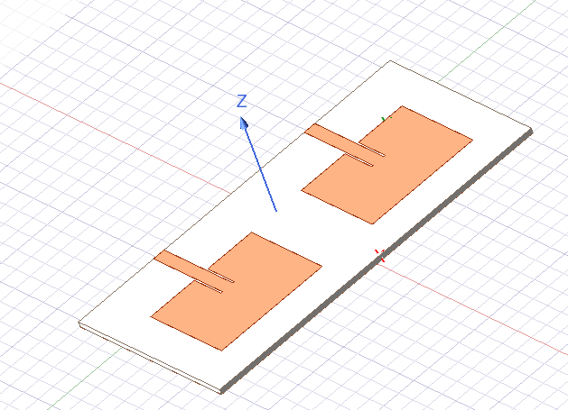
4.1 Input Match and Mutual Coupling
Figure 4.2 presents the two-port S-parameters of the array. Since the geometry is symmetric, the \(S_{11}\) and \(S_{22}\) responses are nearly identical.
The two resonances occurred close to \(3.025\text{ GHz}\), slightly above the original 3 GHz design frequency. The minimum reflection coefficients were approximately:
The small difference between the two responses is attributable to numerical and meshing asymmetry rather than a meaningful difference between the elements.
The mutual coupling near resonance was approximately:
This corresponds to a coupled-power ratio of approximately:
The coupling is therefore measurable but moderate. This is consistent with the expected behavior of two microstrip patches separated by approximately half a wavelength.
The resonance shift relative to the isolated patch also demonstrates that array elements cannot be treated as completely independent radiators. Each element modifies the electromagnetic environment seen by the other, altering its input impedance and resonant frequency.
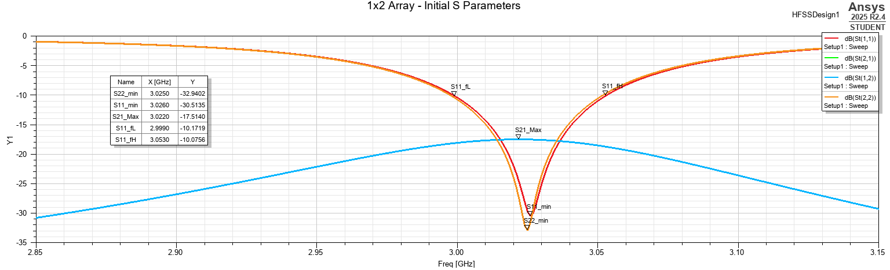
4.2 Broadside Radiation Pattern
The radiation pattern was evaluated at 3 GHz using the stored adaptive field solution. Although the minimum input reflection occurred near \(3.025\text{ GHz}\), the difference is less than one percent, and the 3 GHz solution provides an appropriate reference for the intended operating frequency.
Figure 4.3 compares the two principal radiation-plane cuts:
- \(\phi=90^\circ\): array plane, containing the element-spacing axis
- \(\phi=0^\circ\): orthogonal plane
The array-plane pattern is significantly narrower because the two-element array factor acts in this plane. The orthogonal-plane pattern remains considerably broader and more closely resembles the radiation pattern of an individual patch.
The array-plane half-power points occurred at approximately:
giving an array-plane half-power beamwidth of:
The orthogonal-plane half-power points occurred at approximately:
giving:
The moderate asymmetry in the orthogonal-plane pattern is caused by the inset feeds and finite board geometry. In contrast, the array-plane pattern remains highly symmetric about broadside.
The peak realized gain was approximately:
The corresponding back-direction realized gain was approximately:
resulting in a front-to-back ratio of:
No prominent grating lobes appeared at the \(0.5\lambda_0\) spacing.
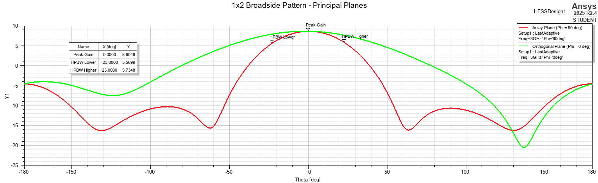
4.3 Three-Dimensional Radiation Pattern
The three-dimensional realized-gain pattern is shown in Figure 4.4. The main beam points in the \(+\hat{z}\) direction, normal to the patch surfaces, confirming the expected broadside operation.
The pattern is compressed along the array axis because of the two-element array factor, while remaining wider in the orthogonal plane. This produces the elongated broadside beam shape expected from a linear \(1\times2\) array.
The peak realized gain increased by approximately 2.34 dB relative to the 6.29 dBi isolated-patch reference:
The result is reasonably close to the ideal \(3\text{ dB}\) improvement expected when the number of identical radiating elements is doubled. The remaining difference is caused by dielectric and conductor losses, impedance mismatch, mutual coupling, and the non-ideal finite ground plane.
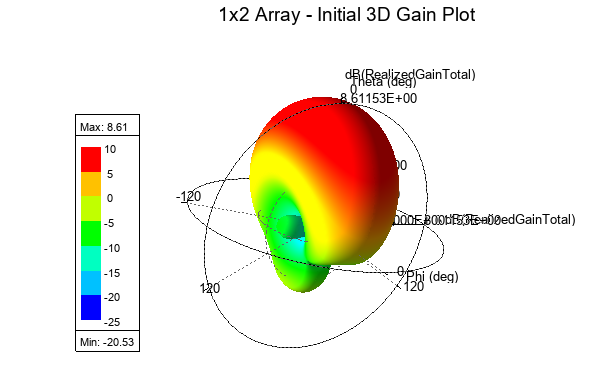
4.4 Directivity, Gain, and Efficiency
The main antenna parameters were calculated over the complete radiation sphere at 3 GHz. The results are summarized in Table 4.1.
Table 4.1. Broadside array parameters at 3 GHz.
| Parameter | Result |
|---|---|
| Peak directivity | \(9.285\text{ dBi}\) |
| Peak gain | \(8.814\text{ dBi}\) |
| Peak realized gain | \(8.626\text{ dBi}\) |
| Radiation efficiency | \(89.72\%\) |
| Total efficiency | \(85.91\%\) |
| Radiated power | \(1.718\text{ W}\) |
| Accepted power | \(1.915\text{ W}\) |
| Array-plane HPBW | \(46.47^\circ\) |
| Orthogonal-plane HPBW | \(88.02^\circ\) |
| Front-to-back ratio | \(13.17\text{ dB}\) |
The radiation efficiency is defined as:
Using the simulated powers:
The peak gain is related to the peak directivity through this efficiency:
With \(1\text{ W}\) incident at each port, the total incident power was \(2\text{ W}\). The total efficiency, which also includes mismatch loss, was therefore:
The realized gain is related to the directivity through the total efficiency:
The relatively small difference between gain and realized gain indicates that mismatch loss is minor. Most of the difference between directivity and realized gain results from dielectric and conductor losses in the antenna structure.
4.5 Element Surface Current
Figure 4.5 shows the surface-current magnitude on the two patches and feed lines under equal-phase excitation.
The two elements exhibit nearly identical current distributions, confirming that they are excited symmetrically. Strong current appears around the inset-feed regions, along the feed lines, and across the patch surfaces. The current maxima and minima occur at corresponding positions on both elements.
The matching current-magnitude distributions are consistent with symmetric excitation. The specified equal source phases and broadside radiation pattern confirm the intended operating state; magnitude plots alone do not establish relative current phase. The radiated fields combine to produce the observed gain increase and reduced array-plane beamwidth.
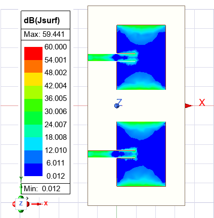
4.6 Ground-Plane Surface Current
The corresponding ground-plane current is shown in Figure 4.6.
Strong return currents appear beneath each patch and feed line, with a smooth reduction in magnitude away from the active regions. The current distribution is highly symmetric between the two elements, which is consistent with the symmetry of the array-plane radiation pattern.
A lower current level remains visible between the two antennas. This represents one of the electromagnetic coupling paths between the elements through the shared ground structure. However, the inter-element ground current is substantially weaker than the local return currents beneath the patches, consistent with the moderate \(S_{21}\) value.
The current also remains relatively weak near the outer ground-plane edges, indicating that the finite board does not excite a dominant asymmetric edge mode in the broadside configuration.
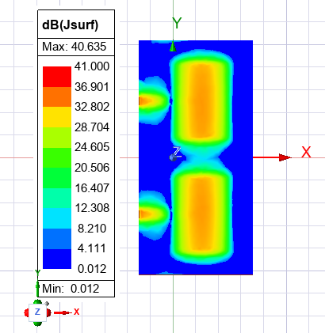
4.7 Baseline Summary
The \(1\times2\) array produced a stable broadside beam with a peak realized gain of approximately \(8.63\text{ dBi}\). Relative to the 6.29 dBi isolated-patch reference, the realized gain increased by approximately 2.34 dB and the beamwidth decreased in the array plane.
The main baseline results were:
- Resonance near \(3.025\text{ GHz}\)
- Mutual coupling of approximately \(-17.51\text{ dB}\)
- Peak realized gain of \(8.63\text{ dBi}\)
- Radiation efficiency of \(89.72\%\)
- Total efficiency of \(85.91\%\)
- Array-plane HPBW of \(46.47^\circ\)
- Orthogonal-plane HPBW of \(88.02^\circ\)
- Front-to-back ratio of approximately \(13.17\text{ dB}\)
- Symmetric element and ground-current distributions
- No prominent grating lobes
This equal-phase \(0.5\lambda_0\) configuration provides the reference case for the element-spacing and mutual-coupling study presented in Section 5.
5. Element Spacing and Mutual Coupling
Element spacing is one of the primary design variables in an antenna array. Placing the elements close together generally increases mutual coupling and can alter their input impedances. Increasing the spacing reduces coupling and enlarges the effective aperture, but it also strengthens secondary lobes and can eventually produce grating lobes.
To investigate these effects, the center-to-center spacing of the two patches was swept while keeping the individual element geometry and broadside excitation unchanged.
The spacing was parameterized as:
where the free-space wavelength at 3 GHz is:
The following spacing values were simulated:
These values correspond to physical separations from \(35\text{ mm}\) to \(120\text{ mm}\). The minimum spacing was limited to \(0.35\lambda_0\), since the patch width was approximately \(33.4\text{ mm}\) and smaller values would cause the elements to overlap.
The substrate, ground plane, air region, feeds, and ports were parameterized so that the complete array remained centered and updated automatically as the spacing changed.
5.1 Mutual Coupling
Figure 5.1 shows the transmission coefficient \(S_{21}\) at 3 GHz as a function of element spacing.
| Element spacing | \(S_{21}\) at 3 GHz | Coupled-power ratio |
|---|---|---|
| \(0.35\lambda_0\) | \(-6.73\text{ dB}\) | \(21.2\%\) |
| \(0.40\lambda_0\) | \(-11.31\text{ dB}\) | \(7.4\%\) |
| \(0.50\lambda_0\) | \(-18.06\text{ dB}\) | \(1.56\%\) |
| \(0.60\lambda_0\) | \(-23.42\text{ dB}\) | \(0.46\%\) |
| \(0.75\lambda_0\) | \(-30.62\text{ dB}\) | \(0.087\%\) |
| \(1.00\lambda_0\) | \(-41.14\text{ dB}\) | \(0.0077\%\) |
| \(1.20\lambda_0\) | \(-49.09\text{ dB}\) | \(0.0012\%\) |
The coupled-power ratio was calculated using:
The \(0.35\lambda_0\) case exhibited particularly strong coupling, with more than \(20\%\) of the incident power represented by the \(S_{21}\) transmission ratio. Increasing the spacing to \(0.5\lambda_0\) reduced this value to approximately \(1.56\%\).
At \(0.75\lambda_0\), the coupling fell below \(-30\text{ dB}\), and at spacings of one wavelength or greater it became negligible.
The trend is nearly monotonic, indicating that the dominant change is the reduction of near-field interaction as the elements are separated. No substantial oscillations caused by the finite ground plane appeared over the simulated range.
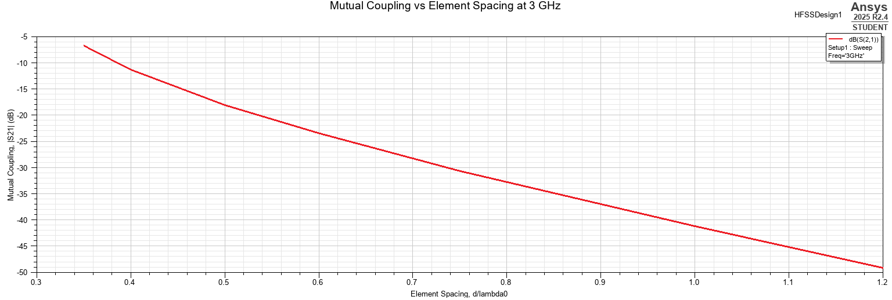
5.2 Input-Match Variation
Mutual coupling also modifies the input impedance of each element. Figure 5.2 compares \(S_{11}\) across the frequency sweep for all seven spacing cases.
| Spacing | Resonance | Minimum \(S_{11}\) | \(S_{11}\) at 3 GHz | Approximate \(-10\text{ dB}\) bandwidth |
|---|---|---|---|---|
| \(0.35\lambda_0\) | 3.051 GHz | \(-15.97\text{ dB}\) | \(-9.86\text{ dB}\) | 76 MHz |
| \(0.40\lambda_0\) | 3.034 GHz | \(-33.20\text{ dB}\) | \(-9.51\text{ dB}\) | 58 MHz |
| \(0.50\lambda_0\) | 3.026 GHz | \(-30.91\text{ dB}\) | \(-10.50\text{ dB}\) | 53 MHz |
| \(0.60\lambda_0\) | 3.025 GHz | \(-29.46\text{ dB}\) | \(-10.72\text{ dB}\) | 54 MHz |
| \(0.75\lambda_0\) | 3.028 GHz | \(-35.99\text{ dB}\) | \(-9.86\text{ dB}\) | 54 MHz |
| \(1.00\lambda_0\) | 3.028 GHz | \(-35.13\text{ dB}\) | \(-9.81\text{ dB}\) | 55 MHz |
| \(1.20\lambda_0\) | 3.030 GHz | \(-38.52\text{ dB}\) | \(-9.28\text{ dB}\) | 55 MHz |
The strongest detuning occurred at \(0.35\lambda_0\). The resonance shifted upward to approximately \(3.051\text{ GHz}\), and the minimum \(S_{11}\) became considerably shallower. This behavior is consistent with the strong mutual coupling measured for this spacing.
At \(0.40\lambda_0\), the resonance occurred near \(3.034\text{ GHz}\). From \(0.50\lambda_0\) onward, it remained relatively stable between approximately \(3.025\) and \(3.030\text{ GHz}\).
The \(-10\text{ dB}\) bandwidth also stabilized near \(53\) to \(55\text{ MHz}\) once the spacing reached \(0.5\lambda_0\). This indicates that the element input impedance becomes much less sensitive to spacing after the strongest near-field interaction has been reduced.
The radiation patterns in the following sections were evaluated at the 3 GHz design frequency. Although some spacing cases are slightly above the \(-10\text{ dB}\) level at exactly 3 GHz, realized gain includes this mismatch loss and therefore remains the appropriate comparison quantity.
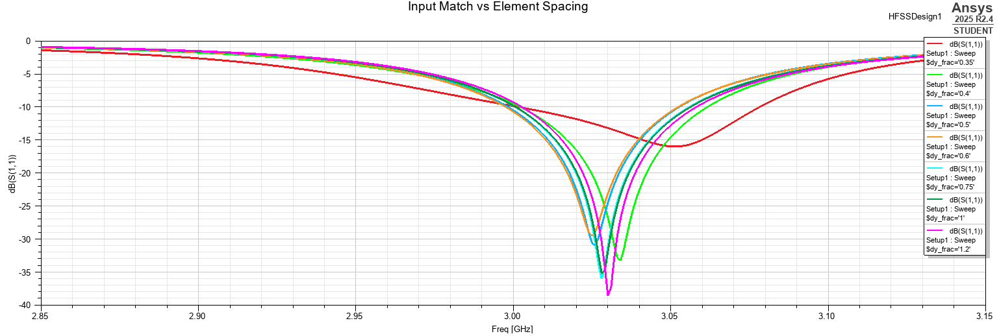
5.3 Effect on the Broadside Radiation Pattern
The broadside realized-gain patterns were evaluated using equal-amplitude, equal-phase excitation:
The \(\phi=90^\circ\) cut was used because it contains the element-spacing axis and therefore shows the effect of the array factor most clearly.
For two identical elements separated along the \(y\)-axis, the broadside array factor is:
Using a centered phase reference and normalizing by the maximum value gives:
where:
As the spacing increases, the phase difference between the element contributions changes more rapidly with observation angle. The main beam consequently becomes narrower.
Figure 5.3 shows this behavior in the HFSS results. The \(0.35\lambda_0\) case produces the widest main beam and lowest peak gain. Increasing the spacing progressively narrows the beam and increases its peak gain.
The pattern improvement is accompanied by increasingly strong secondary lobes. These become particularly significant as the spacing approaches one wavelength.
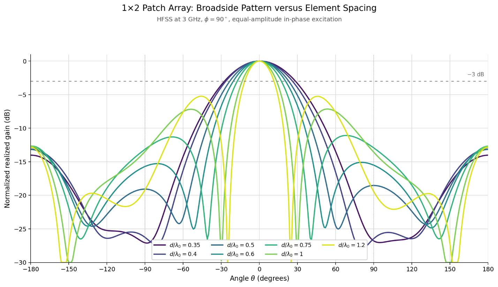
5.4 Gain and Beamwidth
The peak realized gain and half-power beamwidth were extracted from each radiation pattern. The \(-3\text{ dB}\) crossing angles were interpolated between adjacent angular samples.
| Element spacing | Peak realized gain | Array-plane HPBW |
|---|---|---|
| \(0.35\lambda_0\) | 7.72 dBi | \(55.9^\circ\) |
| \(0.40\lambda_0\) | 8.30 dBi | \(52.6^\circ\) |
| \(0.50\lambda_0\) | 8.62 dBi | \(46.5^\circ\) |
| \(0.60\lambda_0\) | 8.83 dBi | \(41.2^\circ\) |
| \(0.75\lambda_0\) | 9.04 dBi | \(34.8^\circ\) |
| \(1.00\lambda_0\) | 9.31 dBi | \(27.1^\circ\) |
| \(1.20\lambda_0\) | 9.29 dBi | \(23.0^\circ\) |
The realized gain increased from \(7.72\text{ dBi}\) at \(0.35\lambda_0\) to approximately \(9.3\text{ dBi}\) at \(1.0\lambda_0\). Increasing the spacing further to \(1.2\lambda_0\) produced essentially no additional broadside gain.
The lower gain at close spacing is partly caused by the strong mutual coupling and poorer input match. As the elements are separated, each element behaves more like an isolated radiator and the effective array aperture increases.
Over the same spacing range, the HPBW decreased from approximately \(55.9^\circ\) to \(23.0^\circ\). This confirms the expected inverse relationship between aperture size and angular beamwidth.
5.5 Secondary Lobes and Grating-Lobe Onset
For broadside excitation, a grating lobe becomes possible when the spacing reaches:
At exactly one wavelength, the additional in-phase direction occurs at endfire:
The patch element pattern radiates weakly toward endfire, so the full-wave grating-lobe branch does not reach the level of the broadside beam. However, the strongest secondary maximum rises substantially as this threshold is approached.
| Element spacing | Strongest secondary maximum | Approximate angle |
|---|---|---|
| \(0.35\lambda_0\) | No distinct maximum | Not applicable |
| \(0.40\lambda_0\) | \(-26.5\text{ dB}\) | \(90^\circ\) |
| \(0.50\lambda_0\) | \(-18.5\text{ dB}\) | \(90^\circ\) |
| \(0.60\lambda_0\) | \(-15.1\text{ dB}\) | \(80^\circ\) |
| \(0.75\lambda_0\) | \(-11.1\text{ dB}\) | \(68^\circ\) |
| \(1.00\lambda_0\) | \(-7.1\text{ dB}\) | \(54^\circ\) |
| \(1.20\lambda_0\) | \(-5.3\text{ dB}\) | \(46^\circ\) |
For \(d=1.2\lambda_0\), the ideal array-factor grating-lobe direction is:
The strongest secondary maximum in the HFSS pattern occurred closer to \(46^\circ\). This difference does not contradict the analytical grating-lobe condition. The analytical value describes the maximum of the isolated array factor, while the full radiation pattern also includes the angular response of the patch elements:
The patch element pattern decreases toward endfire, shifting the maximum of the combined pattern toward broadside. Mutual coupling and the finite ground plane introduce additional differences from the ideal array-factor prediction.
Figure 5.4 summarizes the gain, beamwidth, and secondary-lobe trends. The results clearly show the primary spacing tradeoff: increasing the spacing produces a narrower beam and slightly higher gain, but also causes a substantial increase in secondary radiation.
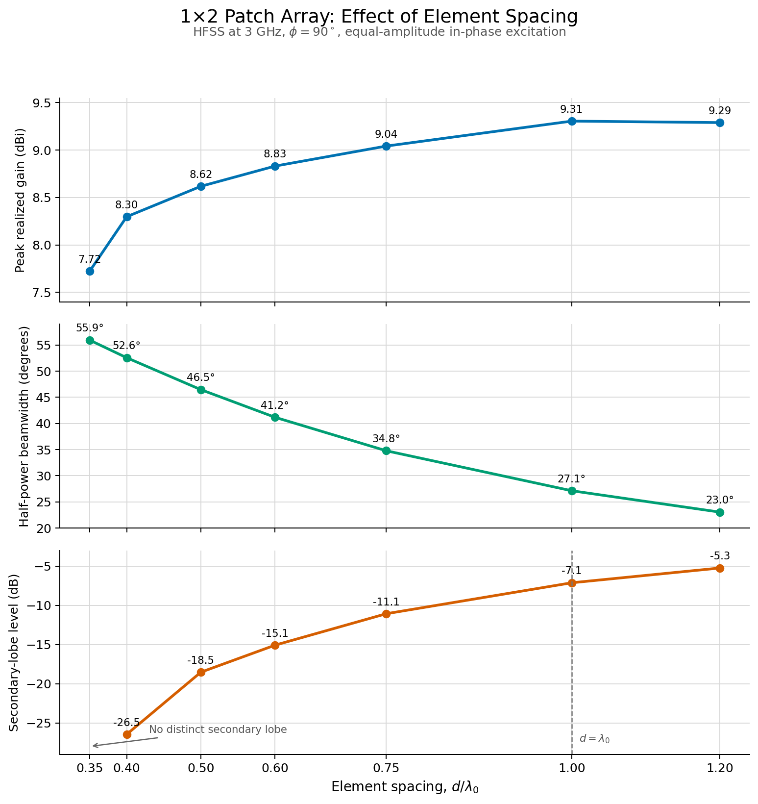
5.6 Spacing Selection
The spacing sweep demonstrates that no single value simultaneously minimizes mutual coupling, maximizes gain, minimizes beamwidth, and suppresses secondary lobes.
Spacings below \(0.5\lambda_0\) produced:
- Stronger mutual coupling
- Greater resonance detuning
- Lower realized gain
- Wider main beams
Larger spacings produced:
- Lower mutual coupling
- Narrower main beams
- Slightly higher broadside gain
- Stronger secondary lobes
- Grating-lobe behavior as \(d\) approached or exceeded \(\lambda_0\)
The original \(0.5\lambda_0\) spacing provides a practical compromise:
- Mutual coupling of approximately \(-18.1\text{ dB}\)
- Peak realized gain of approximately \(8.62\text{ dBi}\)
- Array-plane HPBW of approximately \(46.5^\circ\)
- Secondary radiation approximately \(18.5\text{ dB}\) below the main beam
- Stable input-match behavior
- No prominent grating lobes
The \(0.5\lambda_0\) configuration was therefore retained as the reference geometry for the subsequent beam-steering study.
6. Progressive Phase and Beam Steering
Beam steering was demonstrated by applying a progressive phase difference between the two array elements while maintaining equal source magnitudes. Port 1 was used as the phase reference at \(0^\circ\), while the phase applied to Port 2 was varied.
For two elements positioned along the \(y\)-axis, the array factor in the \(\phi=90^\circ\) plane is
where \(d\) is the element spacing, \(k_0=2\pi/\lambda_0\), and \(\beta\) is the phase applied to the second element relative to the first.
To direct the array-factor maximum toward a commanded angle \(\theta_0\), the required progressive phase is
The array used a spacing of
so the phase relationship reduces to
Therefore, positive commanded angles require a negative Port 2 phase, while negative commanded angles require a positive phase.
A Python script automated the phase sweep from \(-60^\circ\) to \(+60^\circ\) in \(15^\circ\) increments. For each configuration, the script updated the HFSS source phases, exported the realized-gain pattern at 3 GHz in the \(\phi=90^\circ\) array plane, and extracted the angle and magnitude of the maximum forward radiation.
The normalized patterns for selected commanded angles are shown in Figure 6.1.
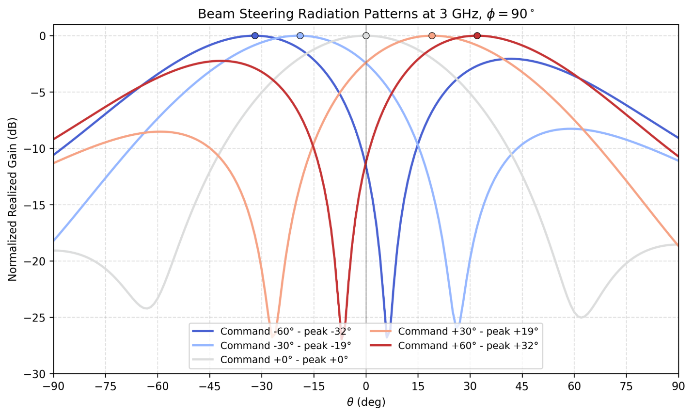
The radiation patterns demonstrate clear electronic steering in both directions. However, the achieved beam angles are consistently closer to broadside than the theoretical commanded angles. For example, a commanded angle of \(30^\circ\) produced a beam maximum at approximately \(19^\circ\), while a commanded angle of \(60^\circ\) produced a maximum at only \(32^\circ\).
This behavior occurs because the phase equation controls the maximum of the array factor, not necessarily the maximum of the complete antenna pattern. The total pattern can be approximated as
or, in terms of power gain,
The patch-element pattern is strongest near broadside and decreases toward endfire. Because the two-element array factor has a relatively broad main beam, multiplication by the element pattern pulls the maximum of the complete pattern back toward broadside. An analytical combination of the isolated patch pattern and the two-element array factor predicted a peak near \(18^\circ\) for the commanded \(30^\circ\) case, compared with approximately \(19^\circ\) in the full-wave HFSS result.
The complete phase-sweep results are summarized in Table 6.1.
| Commanded Angle (deg) | Port 2 Phase (deg) | Achieved Angle (deg) | Peak Realized Gain (dBi) | Scan Error (deg) | Scan Loss (dB) |
|---|---|---|---|---|---|
| -60 | 155.9 | -32 | 6.407 | 28 | 2.211 |
| -45 | 127.3 | -27 | 7.263 | 18 | 1.355 |
| -30 | 90.0 | -19 | 8.004 | 11 | 0.614 |
| -15 | 46.6 | -10 | 8.463 | 5 | 0.155 |
| 0 | 0.0 | 0 | 8.618 | 0 | 0.000 |
| 15 | -46.6 | 10 | 8.480 | -5 | 0.138 |
| 30 | -90.0 | 19 | 8.036 | -11 | 0.582 |
| 45 | -127.3 | 26 | 7.312 | -19 | 1.306 |
| 60 | -155.9 | 32 | 6.476 | -28 | 2.142 |
Table 6.1: Applied phase, achieved beam angle, peak realized gain, scan error, and scan loss for the progressive-phase sweep.
The signed scan error was calculated as
Consequently, the positive error for negative steering and negative error for positive steering both indicate that the beam was pulled toward broadside. The magnitude of the error increased from \(5^\circ\) at a commanded angle of \(15^\circ\) to \(28^\circ\) at a commanded angle of \(60^\circ\).
Figure 6.2 compares the commanded and achieved beam angles against the ideal relationship.
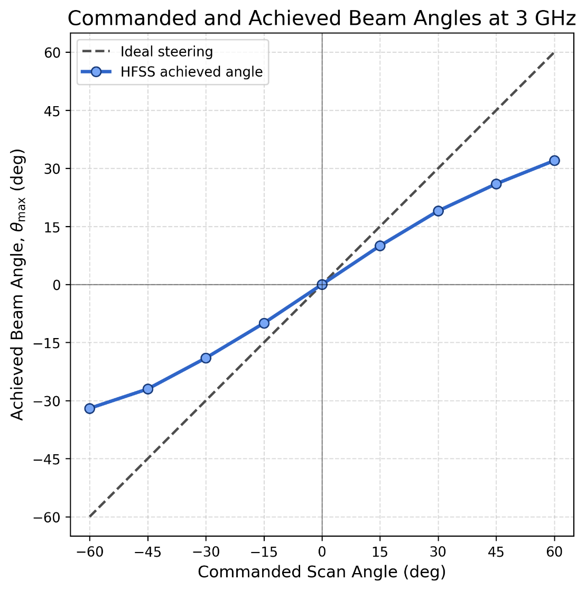
The HFSS response remains approximately symmetric about broadside, but increasingly departs from the ideal steering line at larger phase shifts. The positive and negative results differed by no more than \(1^\circ\) in achieved angle and \(0.07\ \text{dB}\) in peak gain. This close symmetry confirms that the two elements and their applied phase states behaved consistently.
Scan loss was calculated relative to the broadside peak realized gain:
The broadside phase-sweep result was \(8.618\ \text{dBi}\), which is consistent with the \(8.626\ \text{dBi}\) baseline result reported previously. The small difference results from pattern sampling and numerical precision.
Figure 6.3 shows the reduction in realized gain as the commanded scan angle increases.
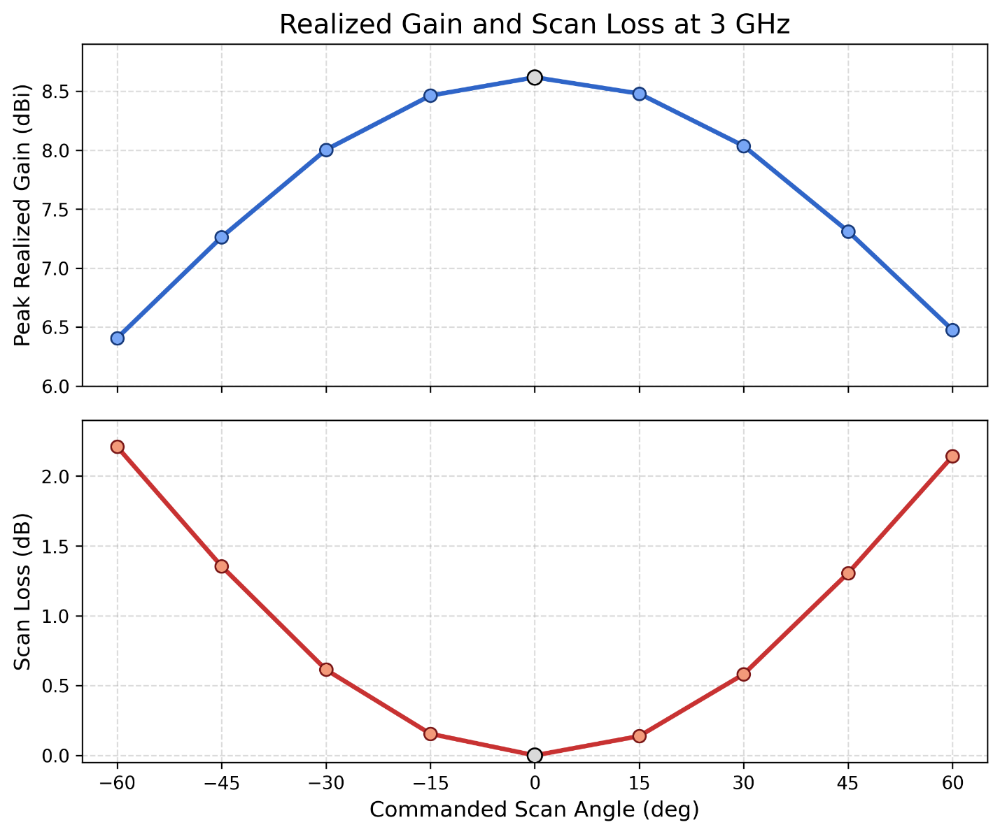
The scan loss remained below approximately \(0.62\ \text{dB}\) for commanded angles through \(\pm30^\circ\), corresponding to achieved beam angles of approximately \(\pm19^\circ\). At the commanded \(\pm45^\circ\) cases, the scan loss increased to approximately \(1.3\ \text{dB}\). At \(\pm60^\circ\), the loss exceeded \(2.1\ \text{dB}\), and the patterns developed strong secondary radiation on the opposite side of broadside.
These results show that progressive phase successfully steers the two-element array, but the usable scan range is limited by the broad two-element array factor and the angular response of the patch elements. Larger commanded angles do not translate directly into equal beam displacement. Instead, they produce increasing beam pulling, scan loss, and pattern distortion. For a scan-loss criterion below \(1\ \text{dB}\), the tested configuration remained within the limit through commanded angles of approximately \(\pm30^\circ\), corresponding to an achieved scan range of approximately \(\pm19^\circ\).
7. Grating Lobes and Scan-Angle Limits
Increasing the element spacing narrows the array beam and reduces mutual coupling, as demonstrated in Section 5. However, large spacing can also produce additional array-factor maxima known as grating lobes. These lobes become particularly important when progressive phase is used to steer the beam away from broadside.
For an array commanded toward \(\theta_0\), the phase difference is
The array-factor maxima occur when
where \(m\) is an integer. Therefore, the possible maximum directions are
The desired main beam corresponds to \(m=0\). A grating lobe exists when a nonzero value of \(m\) produces a physically visible direction:
For scanning over a maximum angle \(\theta_{\mathrm{max}}\), the approximate spacing requirement for avoiding visible grating lobes is
For a \(30^\circ\) scan, this gives
while a \(60^\circ\) scan requires
These conditions predict that \(0.5\lambda_0\) should remain free of true grating lobes for both scan commands. A spacing of \(0.75\lambda_0\) may appear acceptable at broadside, but should produce grating lobes once the beam is scanned.
The previously solved spacing variations were evaluated at commanded angles of \(30^\circ\) and \(60^\circ\). The required Port 2 phase was calculated separately for every spacing because the phase required for a given scan angle is proportional to \(d/\lambda_0\).
| Spacing | Port 2 Phase for \(30^\circ\) | Predicted Grating Lobe | Port 2 Phase for \(60^\circ\) | Predicted Grating Lobes |
|---|---|---|---|---|
| \(0.50\lambda_0\) | \(-90.0^\circ\) | None | \(-155.9^\circ\) | None |
| \(0.75\lambda_0\) | \(-135.0^\circ\) | \(-56.4^\circ\) | \(+126.2^\circ\) | \(-27.9^\circ\) |
| \(1.00\lambda_0\) | \(-180.0^\circ\) | \(-30.0^\circ\) | \(+48.2^\circ\) | \(-7.7^\circ\) |
| \(1.20\lambda_0\) | \(+144.0^\circ\) | \(-19.5^\circ\) | \(-14.1^\circ\) | \(-53.2^\circ,\ +1.9^\circ\) |
Table 7.1: Applied phase and analytically predicted grating-lobe directions for the spacing-and-scan study.
A Python script applied each source configuration, exported the corresponding \(\phi=90^\circ\) realized-gain pattern at 3 GHz, and extracted the strongest angularly separated peaks. Each pattern in the following figures was normalized to its own maximum so that the relative lobe levels could be compared directly.
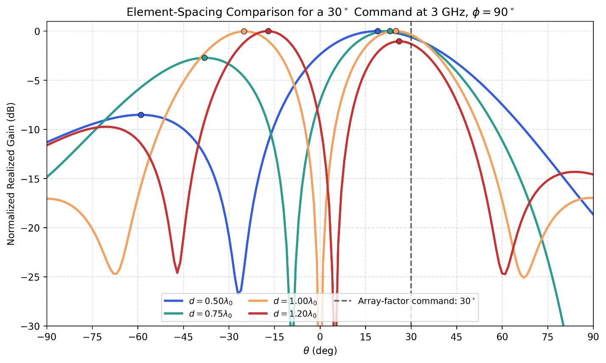
For the \(30^\circ\) command, the \(0.50\lambda_0\) array produced its strongest beam at \(+19^\circ\). The difference from the commanded angle is consistent with the beam-pulling behavior discussed in Section 6. The strongest secondary peak occurred at \(-59^\circ\), but it remained \(8.52\ \text{dB}\) below the main beam and was not a true grating lobe.
At \(0.75\lambda_0\), a strong secondary lobe appeared at \(-38^\circ\), only \(2.72\ \text{dB}\) below the desired-side peak at \(+23^\circ\). This confirms the predicted onset of spatial aliasing, although the observed angle differs from the ideal array-factor prediction of \(-56.4^\circ\).
At \(1.00\lambda_0\), the pattern contained peaks at \(+25^\circ\) and \(-25^\circ\) with a difference of only \(0.03\ \text{dB}\). The array therefore radiated almost equally in two directions, making the commanded direction ambiguous.
At \(1.20\lambda_0\), the grating lobe at \(-17^\circ\) became the strongest beam. The intended-side peak at \(+26^\circ\) was approximately \(1.04\ \text{dB}\) weaker. The array was therefore no longer primarily radiating toward the commanded side.
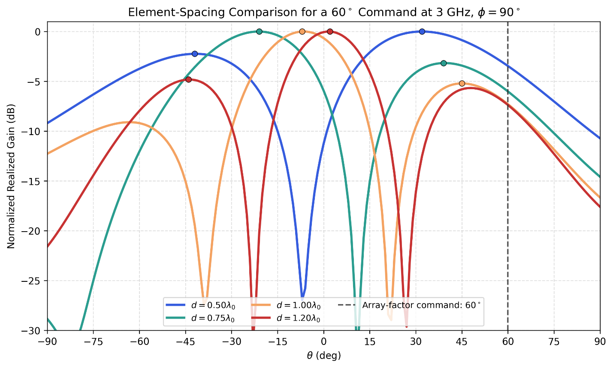
The \(60^\circ\) command produced a more severe response. At \(0.50\lambda_0\), the strongest beam occurred at \(+32^\circ\), while a secondary peak at \(-42^\circ\) remained \(2.24\ \text{dB}\) lower. Although this secondary peak was relatively strong, the analytical condition confirms that it was not a true grating lobe. It resulted from the broad two-element array factor, the patch-element pattern, and the severe near-endfire phase command.
At \(0.75\lambda_0\), the grating lobe became dominant. The strongest beam appeared at \(-21^\circ\), while the intended-side peak occurred at \(+39^\circ\) and was \(3.16\ \text{dB}\) weaker.
For \(1.00\lambda_0\), the strongest beam occurred at \(-7^\circ\), closely matching the theoretical grating-lobe prediction of \(-7.7^\circ\). The intended-side peak near \(+45^\circ\) was approximately \(5.21\ \text{dB}\) lower.
At \(1.20\lambda_0\), the dominant beam appeared at \(+2^\circ\), in excellent agreement with the predicted \(+1.9^\circ\) grating lobe. Another lobe appeared at approximately \(-44^\circ\), associated with the predicted \(-53.2^\circ\) array-factor maximum. The intended-side peak near \(+48^\circ\) was only the third strongest peak.
The extracted full-wave results are summarized below.
| Command | Spacing | Strongest Peak | Second Peak | Second-Peak Relative Level |
|---|---|---|---|---|
| \(30^\circ\) | \(0.50\lambda_0\) | \(+19^\circ\) | \(-59^\circ\) | \(-8.52\ \text{dB}\) |
| \(30^\circ\) | \(0.75\lambda_0\) | \(+23^\circ\) | \(-38^\circ\) | \(-2.72\ \text{dB}\) |
| \(30^\circ\) | \(1.00\lambda_0\) | \(+25^\circ\) | \(-25^\circ\) | \(-0.03\ \text{dB}\) |
| \(30^\circ\) | \(1.20\lambda_0\) | \(-17^\circ\) | \(+26^\circ\) | \(-1.04\ \text{dB}\) |
| \(60^\circ\) | \(0.50\lambda_0\) | \(+32^\circ\) | \(-42^\circ\) | \(-2.24\ \text{dB}\) |
| \(60^\circ\) | \(0.75\lambda_0\) | \(-21^\circ\) | \(+39^\circ\) | \(-3.16\ \text{dB}\) |
| \(60^\circ\) | \(1.00\lambda_0\) | \(-7^\circ\) | \(+45^\circ\) | \(-5.21\ \text{dB}\) |
| \(60^\circ\) | \(1.20\lambda_0\) | \(+2^\circ\) | \(-44^\circ\) | \(-4.82\ \text{dB}\) |
Table 7.2: Strongest full-wave pattern peaks and relative secondary-lobe levels for the spacing-and-scan sweep.
The theoretical grating-lobe equation predicts the maxima of the array factor, while HFSS calculates the complete antenna pattern:
Consequently, the full-wave maxima do not always occur exactly at the theoretical array-factor angles. The patch-element pattern favors directions closer to broadside, while finite ground-plane effects, mutual coupling, and the two-element aperture further modify the final pattern. Despite these angular shifts, the predicted onset and progression of the grating lobes agree clearly with the HFSS results.
The high realized gains observed for some grating-lobe directions do not represent improved steering performance. Those lobes occur closer to broadside, where the patch elements naturally provide greater gain. The array is therefore redirecting power into an unintended direction rather than efficiently steering it toward the commanded angle.
These results demonstrate the fundamental compromise between spacing, beamwidth, coupling, and scanning capability. Larger spacing narrowed the broadside beam and reduced mutual coupling, but rapidly introduced spatial ambiguity during scanning. Among the tested configurations, \(0.50\lambda_0\) was the only spacing that avoided true visible grating lobes for both commanded angles. It therefore remains the most suitable spacing for the steerable array, even though its two-element implementation still exhibits beam pulling and strong secondary radiation at large scan commands.
8. Active Input Matching During Beam Steering
The input match of an array element depends on the excitation applied to the other elements. This differs from the conventional passive \(S_{11}\), which assumes that all other ports are terminated in the reference impedance. During beam steering, every element is excited simultaneously, and the signals coupled between elements combine with the reflected signal at each port.
For an \(N\)-element array, the active reflection coefficient at port \(n\) is
where \(a_m\) is the complex excitation applied to port \(m\). For the two-element array,
The excitation ratios contain the progressive steering phase. Consequently, changing the commanded scan angle changes the active reflection coefficient even though the physical antenna geometry remains unchanged.
The corresponding active return loss and active VSWR are
8.1 Simulation Method
The active matching behavior was evaluated for the \(d=0.5\lambda_0\) array used in the beam-steering study. Both ports were excited with equal \(1\text{ W}\) magnitudes. Port 1 remained at \(0^\circ\), while the phase of Port 2 was changed according to the steering commands developed in Section 6.
The active S-parameters were exported from \(2.85\) to \(3.15\text{ GHz}\) for all nine commanded scan angles. The results included
and
for the two antenna ports.
Figure 8.1 shows the frequency-dependent active reflection coefficient. The depth and position of the matching minimum change with the steering phase. The changes are different at the two ports because the coupled contribution depends on the direction of the applied phase progression.
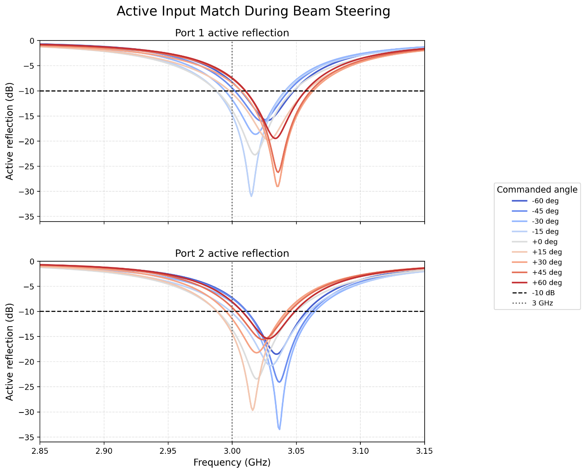
8.2 Active Match at 3 GHz
Table 8.1 summarizes the active matching performance at the \(3\text{ GHz}\) design frequency.
| Commanded angle | Port 1 return loss | Port 2 return loss | Worst-port return loss | Worst-port VSWR |
|---|---|---|---|---|
| \(-60^\circ\) | 8.31 dB | 7.29 dB | 7.29 dB | 2.52 |
| \(-45^\circ\) | 9.47 dB | 7.41 dB | 7.41 dB | 2.48 |
| \(-30^\circ\) | 11.78 dB | 8.26 dB | 8.26 dB | 2.26 |
| \(-15^\circ\) | 14.83 dB | 10.31 dB | 10.31 dB | 1.88 |
| \(0^\circ\) | 13.89 dB | 13.57 dB | 13.57 dB | 1.53 |
| \(+15^\circ\) | 10.52 dB | 14.40 dB | 10.52 dB | 1.85 |
| \(+30^\circ\) | 8.44 dB | 11.48 dB | 8.44 dB | 2.22 |
| \(+45^\circ\) | 7.59 dB | 9.24 dB | 7.59 dB | 2.43 |
| \(+60^\circ\) | 7.47 dB | 8.11 dB | 7.47 dB | 2.47 |
The broadside state provides a worst-port return loss of approximately \(13.57\text{ dB}\), corresponding to an active VSWR of approximately \(1.53\). Both ports also satisfy the \(10\text{ dB}\) return-loss criterion for the \(-15^\circ\), \(0^\circ\), and \(+15^\circ\) commands.
At larger steering commands, at least one port falls below the \(10\text{ dB}\) criterion. At the two extreme commands, the worst-port return loss decreases to approximately \(7.3\) to \(7.5\text{ dB}\), with an active VSWR of approximately \(2.5\).
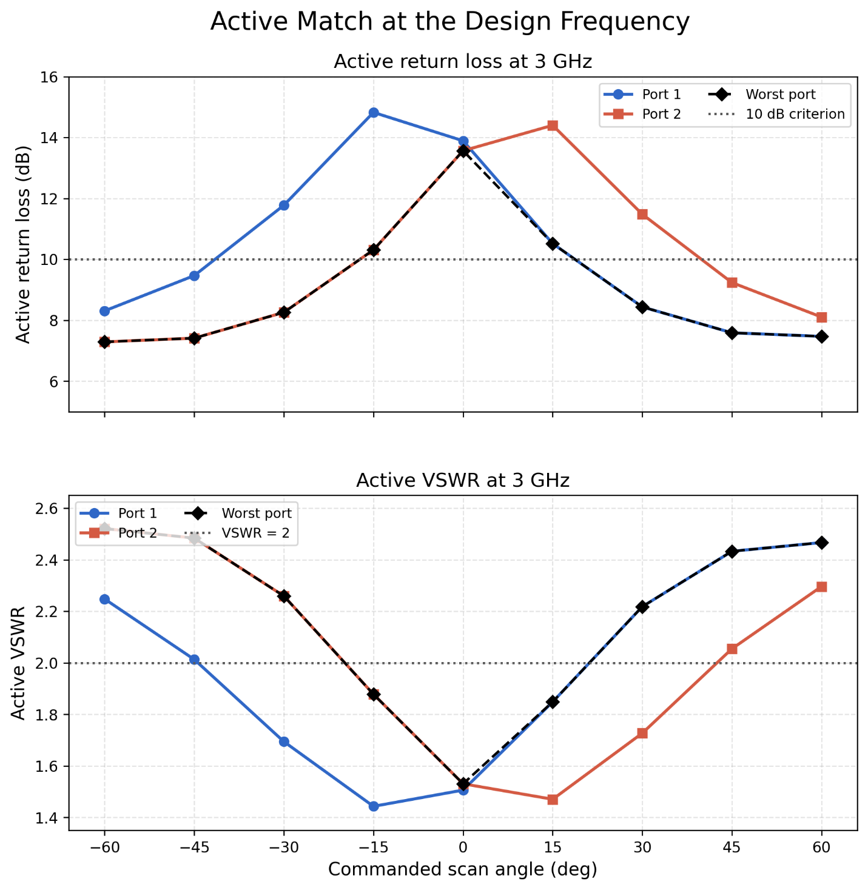
8.3 Scan-Dependent Resonance Shift
For this analysis, the active resonant frequency was defined as the frequency of the minimum active reflection coefficient within the simulated range. The sweep used a frequency resolution of \(1\text{ MHz}\).
| Commanded angle | Port 1 active resonance | Port 2 active resonance |
|---|---|---|
| \(-60^\circ\) | 3.028 GHz | 3.035 GHz |
| \(-45^\circ\) | 3.023 GHz | 3.037 GHz |
| \(-30^\circ\) | 3.018 GHz | 3.037 GHz |
| \(-15^\circ\) | 3.015 GHz | 3.030 GHz |
| \(0^\circ\) | 3.018 GHz | 3.019 GHz |
| \(+15^\circ\) | 3.029 GHz | 3.016 GHz |
| \(+30^\circ\) | 3.035 GHz | 3.019 GHz |
| \(+45^\circ\) | 3.036 GHz | 3.024 GHz |
| \(+60^\circ\) | 3.034 GHz | 3.028 GHz |
At broadside, the active resonances occur at approximately \(3.018\) and \(3.019\text{ GHz}\). Across all steering states, the Port 1 resonance varies from \(3.015\) to \(3.036\text{ GHz}\), while the Port 2 resonance varies from \(3.016\) to \(3.037\text{ GHz}\). Each port therefore exhibits a total frequency span of approximately \(21\text{ MHz}\).
Relative to the broadside state, the active resonance of each port moves by approximately \(-3\) to \(+18\text{ MHz}\). This corresponds to a maximum change of approximately \(0.6\%\) relative to the \(3\text{ GHz}\) design frequency.
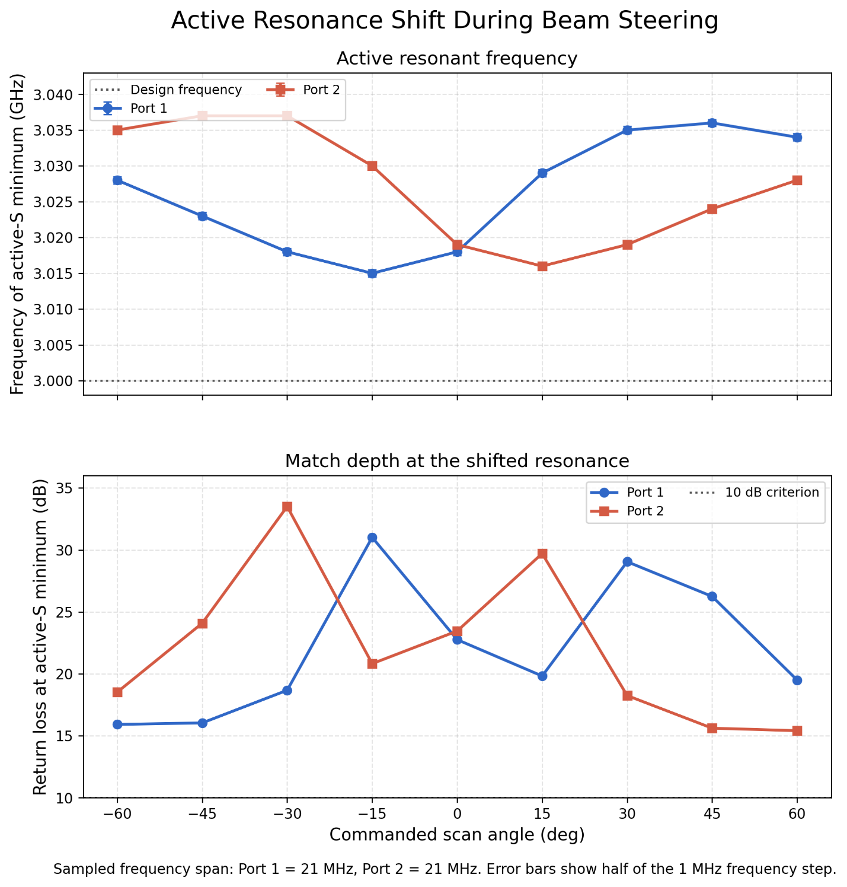
The opposing trends of the two ports are consistent with the reversal of the progressive phase across the array. Ideally, reversing the scan direction would exchange the behavior of the two elements. The remaining asymmetry can result from the finite array geometry, feed orientation, edge effects, and small numerical or structural differences between the two ports.
These results demonstrate that the passive input match alone is insufficient for evaluating a phased array. Although the individual elements remain strongly matched near their shifted active resonances, the array can become poorly matched at the fixed operating frequency as the steering phase increases. Practical phased-array design must therefore evaluate active impedance over the complete frequency and scan-angle range, rather than only at the broadside excitation state.
9. Extension to a 2×2 Planar Array
The original 1×2 array was extended into a 2×2 planar configuration by duplicating the two-element row in the orthogonal direction. The spacing between adjacent elements was maintained at approximately \(0.5\lambda_0\), corresponding to 50 mm at 3 GHz. All four ports were excited with equal amplitude and a relative phase of \(0^\circ\), producing a broadside beam.
For a rectangular 2×2 array, the array factor can be written as
where \(d_x\) and \(d_y\) are the element spacings and \(\beta_x\) and \(\beta_y\) are the progressive phase differences along the two array axes. For the broadside case,
Unlike the 1×2 configuration, which increases the effective aperture in only one direction, the 2×2 array extends the aperture along both principal axes. It can therefore concentrate the radiation pattern in both planes and produce a more symmetric pencil-like beam.
The four reflection coefficients remained closely grouped, with resonances near 3.02-3.03 GHz and minima below approximately \(-26\) dB. Coupling between adjacent elements was approximately \(-17\) to \(-18\) dB around the operating frequency, while the diagonally separated elements exhibited substantially lower coupling of approximately \(-30\) dB. The small differences between the individual port responses are expected because corner elements experience slightly different coupling paths and feed orientations.
9.1 Three-Dimensional Radiation Pattern
The simulated three-dimensional realized-gain pattern is shown in Figure 9.2. The maximum remains directed toward broadside at
with a peak realized gain of
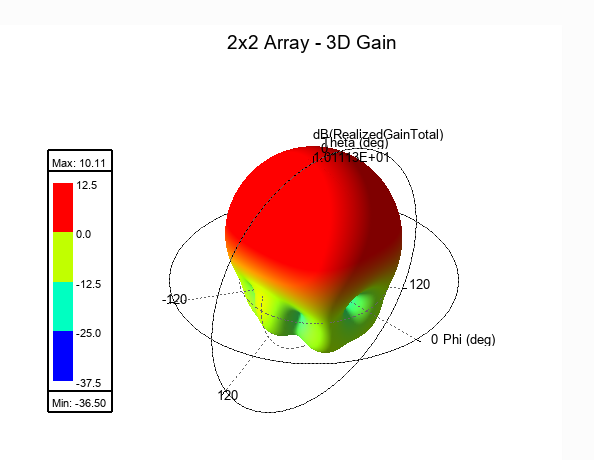
The broadside lobe is visibly concentrated in both angular dimensions. This is the primary radiation-pattern advantage of the planar configuration. Some smaller rear and lower-hemisphere lobes remain because the array uses finite ground and substrate dimensions and practical patch elements rather than ideal isotropic radiators.
9.2 Comparison with the 1×2 Array
Figure 9.3 compares the principal-plane patterns of the 1×2 and 2×2 arrays. The most significant change occurs in the \(\phi=0^\circ\) plane. The 1×2 array had a relatively broad half-power beamwidth of \(88.0^\circ\) in this plane because it contained only one element along that axis. Adding the second row reduced the beamwidth to \(52.3^\circ\).
In the \(\phi=90^\circ\) plane, the 1×2 array was already narrowed by its original two-element arrangement. Its HPBW was \(46.5^\circ\), compared with \(50.4^\circ\) for the 2×2 array. The slight broadening is attributable to the changed finite-array geometry, mutual coupling and the individual element pattern. The main benefit is therefore not additional narrowing in the already-arrayed plane, but the introduction of comparable beam control in the previously broad plane.
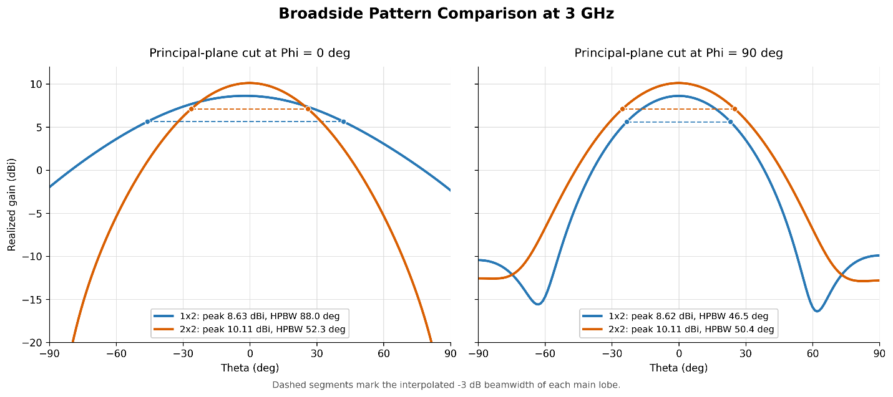
The \(\phi=0^\circ\) beamwidth decreased by approximately
representing a reduction of approximately 41%. The final beamwidths of \(52.3^\circ\) and \(50.4^\circ\) are also much closer to one another, demonstrating that the 2×2 configuration produces a more symmetric main beam.
9.3 Gain and Beamwidth Improvement
The peak realized gain increased from 8.63 dBi for the 1×2 array to 10.11 dBi for the 2×2 array:
An ideal doubling of the number of equally excited elements can provide an approximately 3 dB increase in directivity. The simulated realized-gain improvement is smaller because it includes the effects of dielectric and conductor loss, port mismatch, mutual coupling, the finite ground plane and the nonideal embedded radiation patterns of the individual elements.
Nevertheless, the 2×2 array demonstrates the two principal benefits expected from increasing the planar aperture: higher realized gain and a narrower overall beam. The 1×2 array produces a fan-shaped beam that is narrow primarily in one plane, while the 2×2 array produces a more concentrated pencil-like beam with similar beamwidths in both principal planes.
| Configuration | Peak realized gain | HPBW φ = 0° | HPBW φ = 90° |
|---|---|---|---|
| 1×2 linear array | 8.63 dBi | 88.0° | 46.5° |
| 2×2 planar array | 10.11 dBi | 52.3° | 50.4° |
10. Practical Implementation Considerations and Limitations
The HFSS simulations used ideal port excitations whose amplitudes and phases could be assigned independently. This is useful for studying array behavior, but a physical phased array requires additional RF hardware to generate and distribute these signals.
10.1 Feed Network and Phase Control
A practical four-element array requires a one-to-four power-divider network. An ideal equal divider delivers one quarter of the input power to each element, corresponding to a division ratio of
at each output. This division is not itself a dissipative loss because the total input power is distributed between the four elements. However, conductor loss, dielectric loss, connector loss and imperfect isolation introduce additional insertion loss.
Electronic steering also requires a controllable phase shift in each RF channel. For a planar array, the required progressive phase differences are
and
where \((\theta_0,\phi_0)\) defines the commanded beam direction. These phase differences may be produced using analog phase shifters, switched transmission-line networks, digital beamforming or true-time-delay devices.
The phase values used in HFSS represent the relative phase at each antenna port. A physical feed system must therefore account for the phase delay introduced by cables, transmission lines, connectors, dividers and phase-shifter components.
10.2 Scan Loss and Limited Steering Range
The beam-steering results demonstrated that the achieved angle increasingly departed from the commanded angle at large scan commands. For example, a commanded angle of \(30^\circ\) produced an achieved angle of approximately \(19^\circ\), while a \(60^\circ\) command produced only approximately \(32^\circ\) of beam displacement.
The realized gain also decreased from 8.62 dBi at broadside to approximately 6.4-6.5 dBi for the largest phase commands, corresponding to more than 2 dB of scan loss.
This behavior occurs because the analytical phase relationship assumes ideal elements with identical patterns. The patch elements instead have directional radiation patterns whose gain decreases away from broadside. As the beam is steered, the array factor points farther away from the maximum of the individual element pattern. The total pattern is given by
so the element pattern ultimately limits the useful steering range.
Mutual coupling, finite-array effects and the small number of elements also contribute to the observed pointing error. The progressive phase calculated from the ideal array-factor equation should therefore be treated as an initial command rather than a guarantee of the final beam direction.
10.3 Mutual Coupling and Active Impedance
The impedance observed at an array element depends on the signals present at the other ports. Consequently, changing the steering phases changes the active reflection coefficient of each element even though the physical antenna geometry remains unchanged.
This effect was visible in the active-match analysis, where the resonant frequency and matching level varied with the commanded scan angle. A feed network designed only from the isolated or broadside input impedance may therefore become mismatched during steering.
Practical phased arrays may address this through:
- Broadband element and matching-network design
- Reduced coupling through suitable element spacing
- Decoupling structures
- Scan-dependent matching states
- Digital calibration and correction
- Amplifiers capable of tolerating the expected reflected power
Not every array requires a continuously reconfigurable matching network. Many systems instead design the elements and RF electronics to maintain acceptable performance over the required scan volume.
10.4 Element Spacing and Grating Lobes
Increasing the element spacing enlarges the physical aperture and can narrow the main beam. However, excessive spacing permits additional directions in which the fields from adjacent elements add coherently, producing grating lobes.
Maintaining approximately
is a conservative design choice for arrays intended to scan over a wide angular range. Larger spacing may be acceptable for a limited scan sector, but the allowable value depends on the maximum steering angle.
The spacing study demonstrated that element spacing must therefore balance several competing requirements:
- Smaller spacing suppresses grating lobes but increases mutual coupling.
- Larger spacing reduces coupling and increases aperture size.
- Excessive spacing produces unwanted grating lobes during steering.
- The optimum spacing depends on the required bandwidth and scan volume.
10.5 Calibration and Manufacturing Errors
A physical array will also contain amplitude and phase errors caused by component tolerances, unequal transmission-line lengths, temperature changes and frequency-dependent phase-shifter behavior. These errors can shift the main beam, reduce peak gain and increase sidelobe levels.
Practical systems are therefore calibrated by measuring the complex response of each RF channel relative to a common reference. Correction values are then applied so that the intended amplitude and phase appear at the antenna ports rather than only at the beamformer outputs.
This becomes increasingly important as the array grows. A 2×2 array requires only four controlled channels, but larger arrays may contain hundreds or thousands of elements. The potential gain and angular resolution increase with aperture size, while the feed network, thermal management, calibration and control architecture become substantially more complex.
The simulations in this project therefore represent the electromagnetic behavior of the antenna aperture itself. A complete phased-array implementation would additionally require the RF distribution network, phase-control electronics, calibration process and system-level control required to reproduce the simulated port excitations.
11. Conclusion
This project extended a validated rectangular patch antenna into both linear and planar phased-array configurations. The study began with a two-element array and progressed through broadside operation, analytical array-factor comparison, phase-controlled beam steering, element-spacing analysis, grating-lobe formation and active impedance behavior. The final stage extended the design into a 2×2 planar array.
The 1×2 array produced a broadside peak realized gain of approximately 8.62 dBi. Applying a progressive phase difference successfully steered the main beam, although the achieved angle became increasingly smaller than the ideal commanded angle at large scan commands. A theoretical \(60^\circ\) command produced an achieved angle of approximately \(32^\circ\), while the peak realized gain decreased to approximately 6.4-6.5 dBi.
These results demonstrated that the analytical array factor provides a useful starting point for determining the required phase progression, but it does not fully predict the behavior of a practical array. The embedded patch-element pattern, mutual coupling, finite ground plane and active impedance all influence the final beam direction and realized gain.
The element-spacing study demonstrated the primary design tradeoff between aperture size, mutual coupling and grating-lobe formation. Increasing the spacing can narrow the main beam and reduce coupling, but sufficiently large spacing creates additional radiation lobes, particularly when the beam is steered. A spacing near \(0.5\lambda_0\) provided a practical compromise for the array studied here.
The active-match analysis also showed that the impedance presented at each port changes with the relative excitation phases. Beam steering therefore affects both the radiation pattern and the RF matching condition. This is an important distinction between an isolated antenna and an actively excited array.
Finally, the array was extended from a 1×2 linear arrangement to a 2×2 planar configuration. The peak realized gain increased from 8.63 dBi to 10.11 dBi, an improvement of approximately 1.48 dB using the rounded values. The additional row reduced the previously broad \(\phi=0^\circ\) half-power beamwidth from \(88.0^\circ\) to \(52.3^\circ\). The final 2×2 beamwidths were \(52.3^\circ\) and \(50.4^\circ\), producing a more symmetric pencil-like beam.
Overall, the project demonstrated the relationships between element count, aperture size, phase progression, mutual coupling, beamwidth, scan loss, active matching and grating lobes. It also showed why practical phased arrays require more than calculating an ideal progressive phase. Full-wave simulation and system-level calibration are necessary to determine the excitation values that produce the intended radiation pattern.
Future work could extend the design through a physical corporate-feed network, electronic phase-shifter models and two-dimensional steering of the 2×2 array. Fabricating and measuring the array would also allow the simulated gain, impedance, coupling and steering behavior to be validated experimentally.